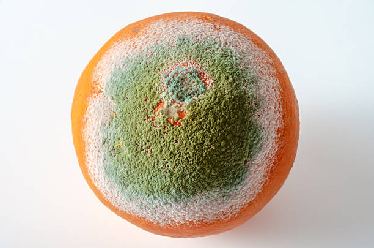
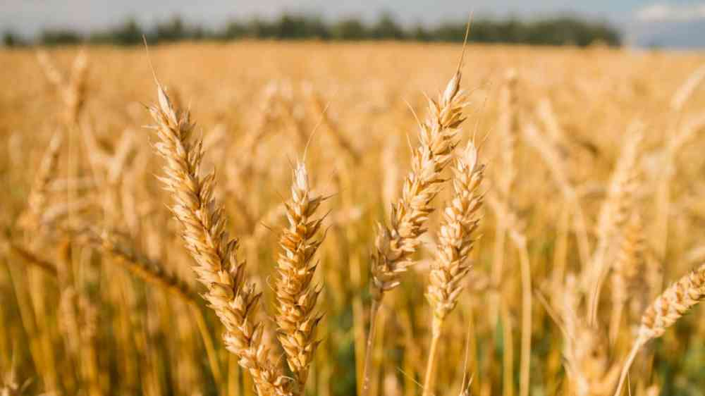

Citrus Pathology & Post Harvest
Pathogen characterization, disease assessment, and eco-friendly approaches to citrus health.
Sujan Chapagain is an agriculture graduate and researcher specializing in plant breeding, horticulture, plant pathology, and crop stress physiology. His research experience spans abiotic and biotic stress screening, field phenotyping, postharvest pathology, and sustainable disease management. He has contributed to projects on drought tolerance in wheat, NDVI and canopy temperature-based phenotyping, wheat leaf rust screening, and citrus postharvest green mold management using botanical extracts.

Pathogen characterization, disease assessment, and eco-friendly approaches to citrus health.

Drought tolerance, disease response, NDVI, canopy temperature, and crop assessment.

Agromorphological characterization, diversity analysis, and trait-based crop improvement.
DNA Extraction, PCR, Marker Design, Disease Screening, Field Phenotyping, Experimental Design, R, Python, GIS, Scientific Writing.
Creativity, Teamwork, Leadership, Communication, Adaptability, Problem Solving, Research Methodology.
Plant Pathology, Crop Health, Disease Management, Genetics & Genomics, Sustainable Agriculture, Climate-Resilient Agriculture.